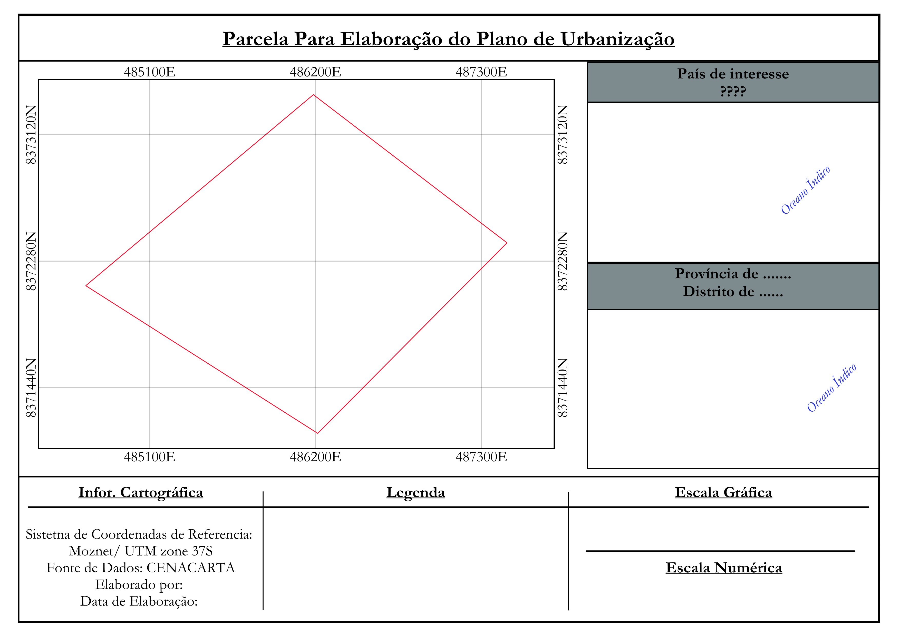
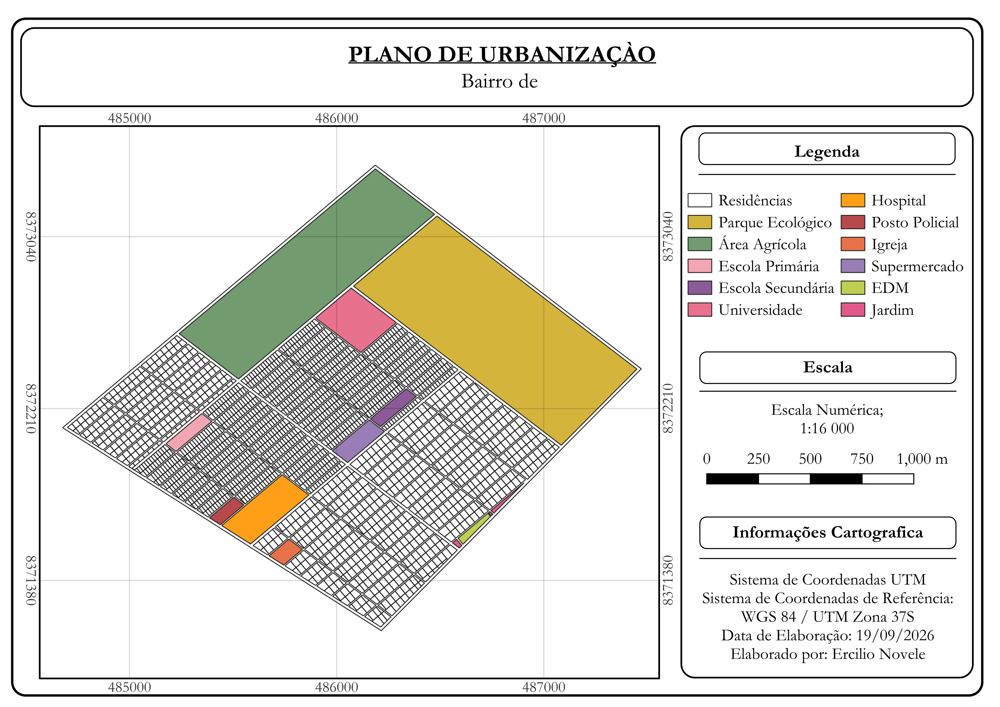
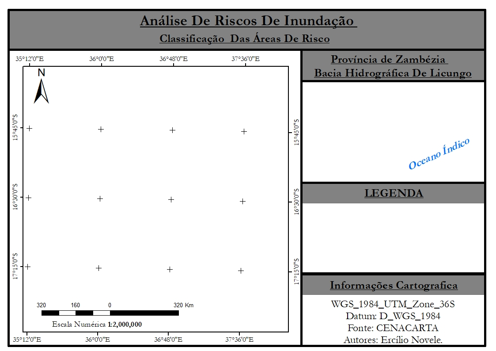
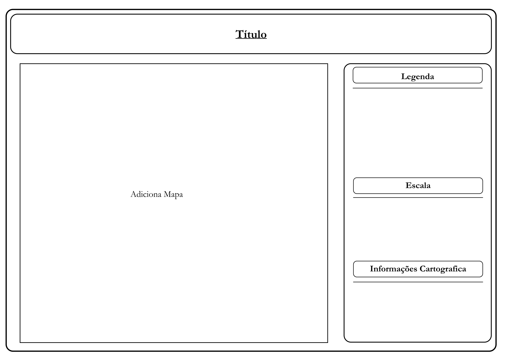

ANÁLISE ESPACIAL
Análise de Risco de Inundação
Análise espacial aplicada à identificação de áreas suscetíveis ao risco de inundação.
Ver projeto →PORTFÓLIO CARTOGRÁFICO
Portfólio de trabalhos em Cartografia, Sistemas de Informação Geográfica, Teledeteção e análise espacial.

01 — SOBRE

Este portfólio apresenta trabalhos desenvolvidos na área da Cartografia, Sistemas de Informação Geográfica (SIG), Teledeteção e análise espacial.
Os projetos apresentados demonstram diferentes aplicações dos dados geográficos na produção de mapas temáticos, mapas de localização e análises espaciais.
O objetivo é transformar dados geográficos complexos em informação cartográfica clara, organizada e visualmente atrativa.
02 — PROJETOS
Análise espacial aplicada à identificação de áreas suscetíveis ao risco de inundação.
Ver projeto →
Representação cartográfica da distribuição espacial dos diferentes grupos de solos.
Ver projeto →
Representação espacial das unidades geológicas da área de estudo.
Ver projeto →
Representação da distribuição espacial da vegetação na área analisada.
Ver projeto →
Elaboração de mapas de localização para enquadramento geográfico de áreas de estudo.
Ver projeto →
Projeto desenvolvido em ambiente de Sistemas de Informação Geográfica.
Ver projeto →03 — COMPETÊNCIAS
Produção de mapas temáticos, mapas de localização e composição cartográfica.
Geoprocessamento, análise espacial, simbologia e elaboração de mapas.
Análise espacial, geoprocessamento, classificação e produção cartográfica.
Processamento de imagens de satélite, NDVI, NDBI e classificação de imagens.
04 — TEMPLATES
Modelos de composição cartográfica prontos a usar. Clique em Visualizar para ampliar ou em Baixar para guardar o ficheiro. Nos modelos QGIS, a seta ao lado de Baixar abre a escolha do tamanho da folha, de A4 a A0.

Estrutura clássica com mapa principal, localizador do país, legenda, escala.

Composição para coropletes com paleta sequencial, legenda de classes e notas de fonte dos dados.

Layout horizontal com mapa, painel de indicadores, gráfico e legenda — ideal para apresentações.

Composição para coropletes com paleta sequencial, legenda de classes e notas de fonte dos dados.

Composição para planos urbanos, com planta, legenda, escala e elementos de orientação — disponível de A4 a A0.
05 — CONTACTO
Interessado em cartografia, SIG ou análise espacial? Entre em contacto.